Still to sort
Every night is booked. One train left: Spacia Kinugawa from Shinjuku on 6 Dec.
Klook still shows the three Shinkansen and Tobu tickets as "confirming", so check they turn to confirmed. Agoda payments come out on 25 Nov (Book & Bed), 27 Nov (Matsuya), 4 Dec (Kyoto) and 10 Dec (Hanok Hotel DAAM). Check GOYOO's charge date in Agoda.
Entry
Australians don't need a visa for either country on this trip. Two free online forms make arrival quicker. Checked on 11 October 2026, so re-check the week before.
-
Before 1 Dec
Visit Japan Web
Free. Up to 90 days visa-free. Register your passport and flight, fill in the immigration and customs forms, and screenshot the QR codes for Narita. Paper forms on arrival still work if you skip it.
Open Visit Japan Web -
12 to 14 Dec
Korea e-Arrival card
Free. Required for foreign visitors. Submit it online in the three days before landing. Do it in Kyoto, not at Haneda at midnight.
Fill in the e-Arrival card -
Nothing to do
K-ETA
Not needed. Australians are exempt from K-ETA until 31 December 2026, and you leave Seoul on 28 December. Skip any site that tries to sell you one.
Official K-ETA site
The plan, day by day
Travel days and bookings are fixed. Anything marked Book needs a ticket. They are all listed in Book ahead.
- 26Nov
- 27Nov
- 28Nov
- 29Nov
- 30Nov
- 1Dec
- 2Dec
- 3Dec
- 4Dec
- 5Dec
- 6Dec
- 7Dec
- 8Dec
- 9Dec
- 10Dec
- 11Dec
- 12Dec
- 13Dec
- 14Dec
- 15Dec
- 16Dec
- 17Dec
- 18Dec
- 19Dec
- 20Dec
- 21Dec
- 22Dec
- 23Dec
- 24Dec
- 25Dec
- 26Dec
- 27Dec
- 28Dec
Melbourne
- Thu26Nov
Land and ease in
- 6:30 am
- Off the overnight from Perth at T4. Bags at the Southbank apartment.
- Morning
- Dukes Coffee on Flinders Lane, then the old Flinders Street photo booth (bring $8 in coins).
- Afternoon
- Nap.
- Night
- Remo's for $18 pasta and tiramisu, then Book Arima Spa, the Japanese bathhouse in Chinatown open till 2 am.
- Fri27Nov
Vintage and Fitzroy
- Morning
- IN WANG VINTAGE on Hardware Lane and Kentez Studio in Campbell Arcade, under Flinders Street.
- Lunch
- Kumo soufflé pancakes on Little Lonsdale.
- Afternoon
- Brunswick and Smith Street shops, lemon gelato at L'Arte Della Gelato, Mile End Bagels.
- Night
- Marion Wine Bar on Gertrude Street, then drinks in the train carriage at Easey's.
- Sat28Nov
Carlton and South Yarra
- Morning
- Mont Blanc coffee at Good Measure, croissant wheels at Calle Bakery, then the Butterfly House at Melbourne Zoo.
- Afternoon
- Chapel Street and Toorak Road shopping, Stupid Vintage in Windsor.
- Night
- Book Julietta in South Yarra for handmade pasta.
- Sun29Nov
J. Cole
- Morning
- Slow start with cinnamon scrolls at Dance Bakes in South Melbourne.
- 4:30 pm
- Early dinner at Pepe's Italian on Exhibition Street.
- 7 pm
- J. Cole, The Fall-Off Tour, Rod Laver Arena. Tickets are in the AXS app: sign in and show your AXS Mobile ID at the door. Bags A4 or smaller. About a 20-minute walk from Southbank.
- Mon30Nov
Last Melbourne day
- Day
- Lunch on the Cleo rooftop, then whatever shops we missed.
- Sunset
- Point Ormond Lookout in Elwood for the skyline.
- Night
- Ballers Clubhouse, Book Alcotraz, or live jazz at Bird's Basement. Pack for Tokyo.
Tokyo · Shinjuku
- Tue1Dec
Land in Tokyo
- Arrive
- Narita T3. Book Narita Express to Shinjuku, about 80 min.
- 4 pm
- Check in at Book & Bed.
- Night
- Omoide Yokocho yakitori and the Kabukicho lights.
- Wed2Dec
Shinjuku and Shibuya
- Morning
- Shinjuku Gyoen garden (¥500), then the free Metropolitan Government Building view.
- Afternoon
- Tower Records Shibuya (free, nine floors of music), then purikura photo booths at moreru mignon in SHIBUYA109.
- Sunset
- Book Shibuya Sky, sunset slot.
- Night
- Shibuya Crossing and Center Gai.
- Thu3Dec
Asakusa workshops and Ueno
- Early
- Senso-ji and Nakamise before 8 am.
- Late morning
- Book Kintsugi gold-repair workshop in Asakusa (about A$13), or glass etching nearby (about A$30).
- Afternoon
- Tokyo National Museum in Ueno (about A$10), Ueno Park and Ameyoko market.
- Night
- Akihabara arcades.
- Fri4Dec
Sumo, Harajuku and JDM cars
- Morning
- Book Live sumo show in Shinjuku, a short walk from Book & Bed (about A$86).
- Afternoon
- Meiji Jingu, Takeshita Street, Omotesando.
- Night
- Book Daikoku JDM car meet tour (about A$196). Check which nights it runs.
- Sat5Dec
Markets, art and lights
- Morning
- Tsukiji Outer Market for breakfast.
- Afternoon
- Book Mariko Mori exhibition at Mori Art Museum, Roppongi Hills (about A$19).
- Night
- Marunouchi Christmas illuminations. Pack for the ryokan.
Kinugawa Onsen and Nikko
- Sun6Dec
To the ryokan
- Morning
- Check out by 11 am.
- Train
- Book Spacia Kinugawa from Shinjuku, about 2 hrs, no changes.
- 3 pm
- Matsuya check-in and the onsen.
- Mon7Dec
Nikko shrines
- Train
- Tobu local to Tobu Nikko, about 35 min. Buy a Nikko bus day pass at the station.
- Day
- Tosho-gu, Shinkyo Bridge and Kanmangafuchi Abyss.
- Night
- Back for a soak. Matsuya is room only, so eat in town.
- Tue8Dec
Samurai day
- Day
- Book Edo Wonderland, an Edo-period theme town with ninja and oiran shows, a short bus from Kinugawa Onsen.
- Or
- Kegon Falls and Lake Chuzenji if the weather is clear.
- Night
- Pack. The train is at 6:41 am.
- Wed9Dec
Ryokan to Kyoto
- 6:41 am
- Kinu 110 to Asakusa (paid).
- 11:00 am
- Nozomi 255 from Tokyo Station (paid), arriving Kyoto 1:15 pm.
- Evening
- Continue Nijojo Kita from 3 pm, then Nishiki Market and Pontocho.
Kyoto and Kanazawa
- Thu10Dec
Inari and Gion in kimono
- Dawn
- Fushimi Inari, before the tour groups.
- Midday
- Book Kimono rental in Gion.
- Afternoon
- Yasaka Shrine, Hanamikoji and Kiyomizu-dera (¥500). Book Tea ceremony in Gion.
- Fri11Dec
Kanazawa day trip
- Train
- Book Thunderbird and Hokuriku Shinkansen via Tsuruga, about 2 hrs each way.
- Day
- Kenroku-en, Omicho Market seafood lunch, Higashi Chaya and gold-leaf ice cream.
- Evening
- Back in Kyoto for dinner.
- Sat12Dec
Arashiyama
- Early
- Bamboo grove and Tenryu-ji.
- Late morning
- Book Sagano Romantic Train along the gorge.
- Afternoon
- Iwatayama monkey park and the Togetsukyo Bridge.
- Sun13Dec
Gold and castles
- Morning
- Kinkaku-ji (¥500), then Ryoan-ji.
- Afternoon
- Nijo Castle, walking distance from the hotel.
- Night
- Kyoto Station Christmas tree. Pack early.
- Mon14Dec
Back to Tokyo, then Haneda
- 7:06 am
- Nozomi 70 (paid). Get off at Shinagawa, about 9:05, then JR two stops to Hamamatsucho. Taxi to Kyoto Station at 6:15 am.
- Day
- Bags at Nine Hours Hamamatsucho, then Ginza or Shiodome.
- 3 pm to 10:30 pm
- Check in, shower and nap, then the Tokyo Monorail to Haneda T3, about 15 min. Last trains are near midnight.
Seoul · Hongdae days, staying in Jongno
- Tue15Dec
Land at dawn
- 4:40 am
- Incheon T1. Book WOWPASS or T-money, and some won.
- Morning
- AREX to Seoul Station (check the first train), then subway Line 1 to Jongno 3-ga or a short taxi. Bags at Hanok Hotel DAAM, then brunch in Ikseon-dong.
- Afternoon
- Nap after check-in at 3 pm, then a slow wander around Insadong.
- Tip
- Book nothing non-refundable today. Energy after a dawn landing is hard to predict.
- Wed16Dec
Markets and K-pop
- Lunch
- Mangwon Market for hotteok, tteokbokki and dumplings, then Mangwon Han River Park. Gloves and ear cover, it's freezing by the river.
- Afternoon
- Book K-pop dance class in Hongdae.
- Night
- Noraebang.
- Thu17Dec
Colour and cafés
- Morning
- Book Personal colour analysis, popular and good for content.
- Afternoon
- Ewha campus, Sinchon shops and photo booths.
- Night
- One or two Yeonnam cafés (Layered Yeonnam, Brunch Cafe JAMJAM), Gyeongui Line Forest Park, then Hongdae side streets.
Seoul · Jongno & Bukchon
- Fri18Dec
Palaces and markets
- Morning
- No move today, you're already in Jongno. Slow breakfast near the hotel.
- Afternoon
- Book Changdeokgung and the Secret Garden tour (timed).
- Night
- Gwangjang Market for bindaetteok and mayak gimbap. Tired? Insadong tea houses instead.
- Sat19Dec
Palace in hanbok
- Morning
- Book Hanbok rental, then free entry to Gyeongbokgung. Guard change at 10 am and 2 pm.
- Afternoon
- Bukchon Hanok Village (keep quiet, people live there) and Samcheong-dong. Cafe Onion Anguk for coffee.
- Night
- Ikseon-dong cafés and the Cheonggyecheon lights.
- Sun20Dec
Myeongdong and Namsan
- Day
- The big K-beauty haul. Start at Olive Young Myeongdong Town, then Royal Skin and Daiso for cheap extras. Bring your physical passport for the instant tax refund (from ₩15,000 at eligible stores). Lunch at Myeongdong Kyoja.
- Look for
- Torriden, Round Lab, Skin1004, Beauty of Joseon sunscreen, Rom&nd and Peripera tints, Clio.
- Sunset
- Book Namsan cable car and N Seoul Tower.
- Night
- Myeongdong street food and the Shinsegae Christmas facade.
Seoul · Gangnam
- Mon21Dec
South of the river
- Morning
- Check out 11 am, about 40 min to Gangnam.
- Afternoon
- Bongeunsa temple, COEX and the Starfield Library.
- 4 pm
- GOYOO check-in.
- Tue22Dec
Seongsu
- Day
- Café Onion Seongsu (go early), Daelim Changgo, Point of View for stationery, Sandos for a sandwich lunch, then pop-ups and Seoul Forest.
- Night
- Ttukseom Han River Park. A Hangang Christmas market there is pencilled in for about 18 to 27 Dec, so confirm closer to the date.
- Wed23Dec
DMZ
- All day
- Book DMZ tour: 3rd Tunnel, Dora Observatory, Dorasan Station. Bring your passport.
- Or
- Book Nami Island, Petite France and the Garden of Morning Calm lights.
- Pick one
- Nami gives variety after all the palaces. Not both.
- Thu24Dec
Christmas Eve
- Day
- Book Lotte World Adventure and its ice rink.
- Night
- Book Seoul Sky at Lotte World Tower, and the Christmas market below.
- Fri25Dec
Christmas Day
- Day
- Spa Lei, a women-only jjimjilbang in Sinsa.
- Night
- Korean BBQ Christmas dinner, e.g. Galbi Samdae near Yeoksam. Book, and check holiday hours.
- Sat26Dec
Shopping day
- Option A
- Apgujeong and Sinsa: Haus Nowhere Dosan (Gentle Monster, Tamburins, Nudake), Apgujeong Rodeo, Garosu-gil.
- Option B
- The Hyundai Seoul in Yeouido for its Christmas display (check if entry needs booking), then Yeouido Han River Park.
- Tip
- Pick one side of the river so you're not racing across Seoul.
- Sun27Dec
Last day in Seoul
- Morning
- Easy morning, no checkout today. COEX and Starfield Library for last gifts.
- Afternoon
- Pack, and check the 6103 bus stop at COEX, about 10 min walk.
- Night
- Early night. Alarm for 3:30 am.
- Mon28Dec
Fly home
- 4:10 am
- First 6103 airport bus from COEX to Terminal 1, about 65 min. Or book a Kakao T taxi for about 4:15 am.
- 7:35 am
- AirAsia via Kuala Lumpur, Perth at 3:40 am on the 29th.
Where to stay
Every night from Melbourne to the last night in Gangnam is booked. Tap a photo to open the place in Maps or on Booking.com.

Apartment in Southbank
A$880for 5 nights
- Dates
- 26 Nov to 1 Dec
- Area
- Southbank, Melbourne
- Via
- Booking.com

Book & Bed Tokyo Shinjuku
~A$392CNY 1,806 for 5 nights
- Dates
- 1 to 6 Dec, in 4 pm, out 11 am
- Room
- Single bunk, breakfast included
- Area
- Kabukicho APM Bldg 8F
- Pay by
- 25 Nov

Hana no Yado Matsuya
~A$289JPY 29,394 for 3 nights, plus a small bathing tax
- Dates
- 6 to 9 Dec, in 3 pm, out 10 am
- Room
- River-view tatami room, room only
- Station
- Kinugawa Onsen
- Pay by
- 27 Nov

Continue Nijojo Kita
~A$230JPY 23,760 for 5 nights
- Dates
- 9 to 14 Dec, in 3 pm, out 10 am
- Room
- Double room, shared bathroom
- Area
- Kamigyo-ku, by Nijo Castle
- Pay by
- 4 Dec
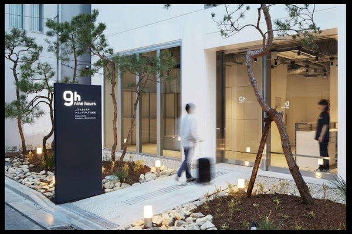
9h nine hours Hamamatsucho
Voucher1 night, ref QA74CQFEW
- Dates
- 14 to 15 Dec, in from 3 pm
- Room
- Female sleeping pod
- Area
- 1-25-20 Hamamatsucho, Minato
- To Haneda
- Tokyo Monorail, about 15 min to T3
Bags in the morning, shower and nap in the afternoon, monorail to Haneda by about 10:30 pm.
Open in Maps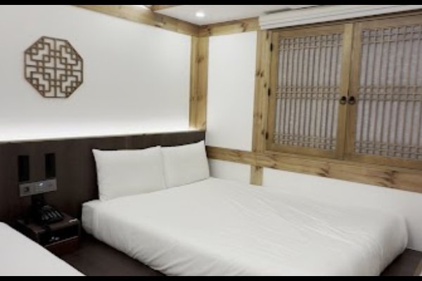
Hanok Hotel DAAM
~A$450KRW 424,617 for 6 nights
- Dates
- 15 to 21 Dec, in 3 pm, out 11 am
- Area
- 19 Yulgok-ro 6-gil, Jongno, near Bukchon
- Station
- Anguk, about 6 min walk
- Charged
- 10 Dec
You land at 4:40 am. Message the hotel on Agoda to ask about dropping bags early.
Open in Maps
GOYOO INN & CABINS
~A$565KRW 533,452 for 7 nights
- Dates
- 21 to 28 Dec, in 4 pm, out 11 am
- Room
- Women-only cabin
- Area
- Teheran-ro 77-gil, Gangnam
- Airport
- 6103 bus from COEX, first at 4:10 am
Stay to stay
Every move from the moment you land in Tokyo to the flight home, step by step. Google Maps in Japan and Naver Map in Korea will show live platforms and times on the day.
Japan
Tue 1 Dec
Narita Airport T3 to Book & Bed Tokyo Shinjuku
- From Terminal 3, follow the signs to Terminal 2 for the trains: about a 10 to 15 minute walk, or the free shuttle bus.
- Book Narita Express (N'EX) to Shinjuku, about 80 to 90 minutes, no changes. Swap your Klook voucher at the JR ticket office first.
- At Shinjuku take the East Exit and walk about 10 minutes into Kabukicho.
- Book & Bed is on the 8th floor of the Kabukicho APM Building. Check-in from 4 pm.
Too tired to drag bags? The airport limousine bus goes straight to Shinjuku, then take a GO taxi for the last bit.
Sun 6 Dec
Book & Bed Tokyo Shinjuku to Hana no Yado Matsuya, Kinugawa Onsen
- Check out by 11 am and walk about 10 minutes back to Shinjuku Station.
- Book Spacia Kinugawa from JR Shinjuku straight to Kinugawa Onsen, about 2 hours, no changes. Reserved seat.
- From Kinugawa Onsen station take a short taxi from the rank outside to the ryokan.
- Check-in from 3 pm. Matsuya is room only, so buy snacks at the station.
Sending your big suitcase ahead with Yamato means you only carry a small bag on this day.
Wed 9 Dec
Hana no Yado Matsuya to Continue Nijojo Kita, Kyoto
- Ask the ryokan the night before to book a taxi to Kinugawa Onsen station for about 6:15 am.
- 6:41 am Kinu 110 to Asakusa (paid), arriving 8:49.
- Ginza Line from Asakusa to Nihonbashi, then a short walk to Tokyo Station, about 20 minutes. Suica.
- 11:00 am Nozomi 255 to Kyoto (paid), arriving 1:15 pm. You have about 2 hours of buffer for breakfast.
- At Kyoto Station take a taxi from the rank, about 15 to 20 minutes to the hotel, or JR Sagano line to Nijo and a 14-minute walk.
- Check-in from 3 pm.
With bags after a long travel day, the taxi from Kyoto Station is worth it.
Mon 14 Dec
Continue Nijojo Kita to 9h nine hours Hamamatsucho, Tokyo
- Book a GO taxi for 6:15 am to Kyoto Station, about 15 minutes. Check out by 10 am, so leave the key as the hotel asks.
- 7:06 am Nozomi 70 (paid). Get off at Shinagawa, about 9:05, one stop before Tokyo.
- JR Yamanote or Keihin-Tohoku line, two stops to Hamamatsucho, about 6 minutes. Suica.
- Short walk to Nine Hours Hamamatsucho. Leave bags, check in from 3 pm.
If you miss Shinagawa, stay on to Tokyo Station and come back 3 stops on the Yamanote line.
Mon 14 Dec, night
9h nine hours Hamamatsucho to Haneda Airport T3, flight MM-809 at 1:55 am
- Shower and pack, then walk to Hamamatsucho Station.
- Tokyo Monorail to Haneda Airport Terminal 3, about 15 minutes.
- Be at the airport by about 11 pm. Last monorails run close to midnight.
Missed the monorail? A taxi from Hamamatsucho to Haneda is short.
Korea
Tue 15 Dec
Incheon Airport T1, landing 4:40 am to Hanok Hotel DAAM, Jongno
- After immigration, buy a T-money or WOWPASS card at the convenience store in arrivals and top it up.
- Take the AREX all-stop train to Seoul Station, about 60 minutes. The first trains leave from about 5:20 am.
- At Seoul Station take subway Line 1 to Jongno 3-ga, then a 9-minute walk, or a short taxi.
- Hanok Hotel DAAM is at 19 Yulgok-ro 6-gil, 6 minutes from Anguk station. Check-in from 3 pm, so drop your bags.
Exhausted after the overnight? A Kakao T taxi from the airport straight to the hotel takes about an hour.
Mon 21 Dec
Hanok Hotel DAAM to GOYOO INN & CABINS, Gangnam
- Check out by 11 am and walk to Anguk station, about 6 minutes.
- Subway Line 3 south to Gyodae, about 25 minutes.
- Change to Line 2 for Samseong, 4 stops.
- Walk to GOYOO on Teheran-ro 77-gil. Check-in from 4 pm, so leave bags first.
With luggage, a Kakao T taxi is about 30 minutes door to door.
Mon 28 Dec
GOYOO INN & CABINS to Incheon Airport T1, flight AK621 at 7:35 am
- Alarm for 3:30 am. Check out and walk to the COEX City Airport Terminal bus stop, about 10 minutes.
- 4:10 am first 6103 airport bus to Incheon Terminal 1, about 65 minutes.
- AirAsia check-in at Terminal 1. Flight via Kuala Lumpur, landing in Perth at 3:40 am on 29 Dec.
Backup: book a Kakao T taxi for about 4:15 am the night before.
Book ahead
Everything in the plan that needs a ticket, in date order. Prices are rough guides from current listings, so check the price when you book. Book the timed ones first.
Melbourne
Booked
Check price
Mid-range
Check price
Japan
About ¥3,000
About ¥3,000
About A$13
About A$30
About A$86
About A$196
About A$19
About A$138
About A$40
About ¥5,000 to ¥6,000
About ¥3,000 to ¥6,000
About ¥3,000 to ¥5,000
About ¥9,000 each way
About ¥900
Korea
About ₩5,000 for the card
About ₩50,000 to ₩70,000
About ₩80,000 to ₩150,000
About ₩8,000
About ₩15,000 to ₩30,000
About ₩40,000 for both
About ₩55,000 to ₩75,000
About ₩60,000 plus ₩29,000 or more
Our TikTok list
Everything shared in the MELBOURNE group chat, all 91 videos. Filter by type, tap a cover to watch it on TikTok, then tell each other which ones you want. The best picks are already in the plan and in the cards below.
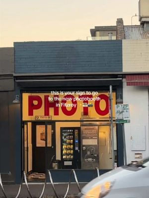
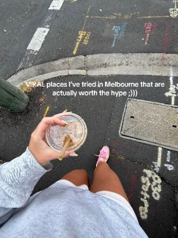
Viral Melbourne spots worth the hype
@hannahaustenn
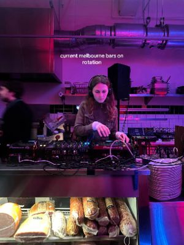
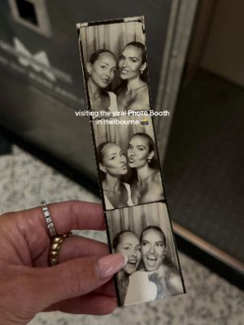
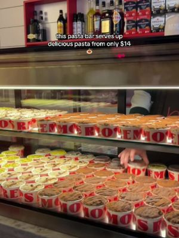
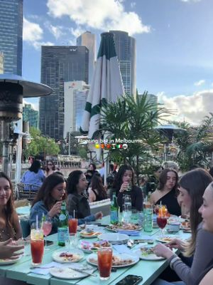
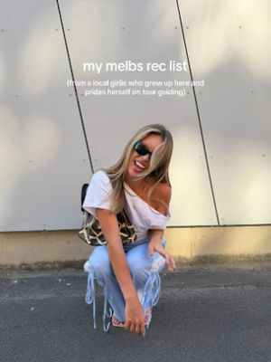
A local girl's Melbourne rec list
@claudia.giblin
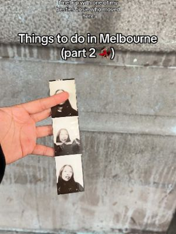
Melbourne's top 10 signature coffees
@chelslovesit
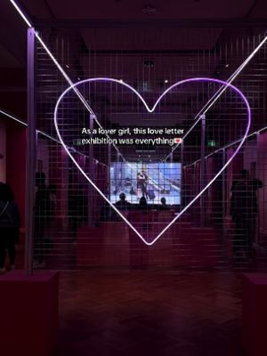
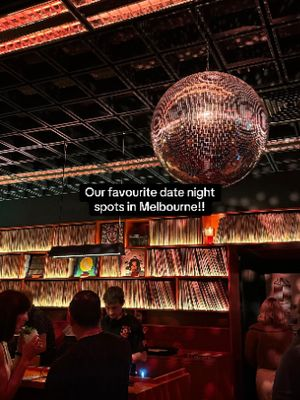
Favourite date-night restaurants
@tinadefreitas
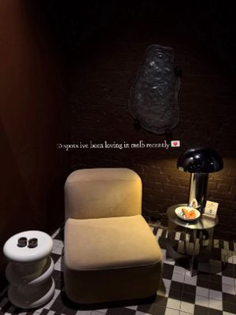
Spots I have been loving lately
@popifern
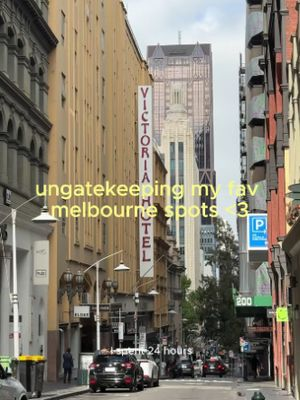
Ungatekeeping my fav Melbourne spots
@shan.kerr
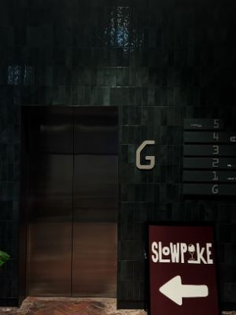
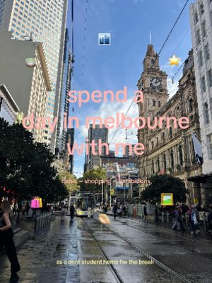
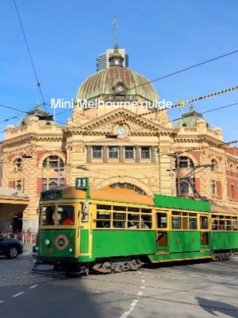
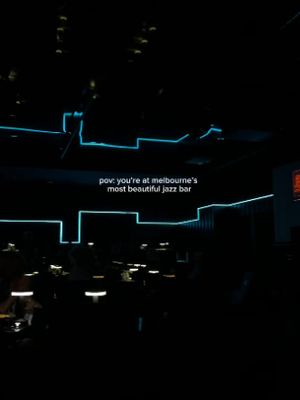
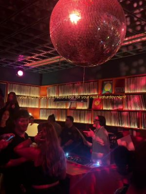
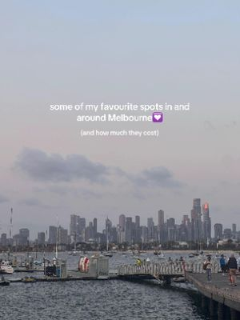
Favourite spots and what they cost
@jasmineloiterton
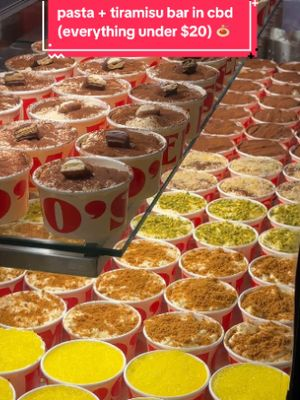
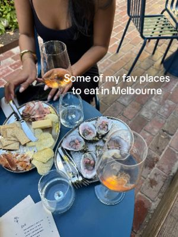
Favourite places to eat
@lillianhicks
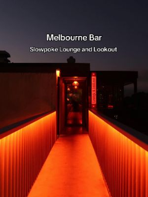
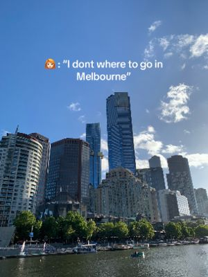
"I don't know where to go in Melbourne"
@syasyabites
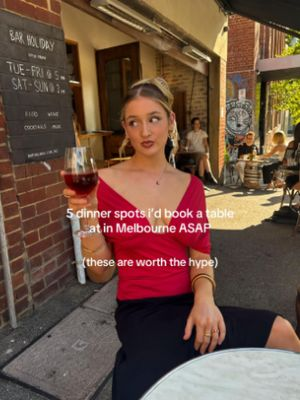
5 dinner spots to book ASAP
@remigodfrey.02
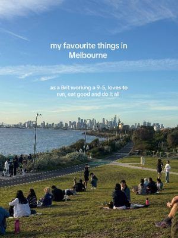
Favourite things in Melbourne
Coffee, República Económica, Marion, city view in Abbotsford
@florriemalcolmm
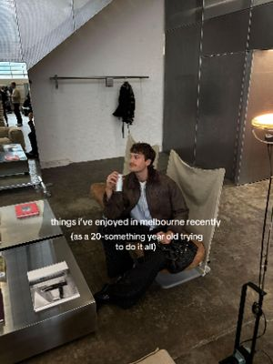
Things enjoyed in Melbourne recently
@johnanderso.n
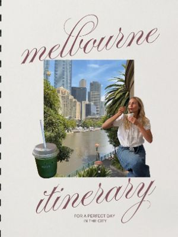
Itinerary for a perfect day
@jennymahalo
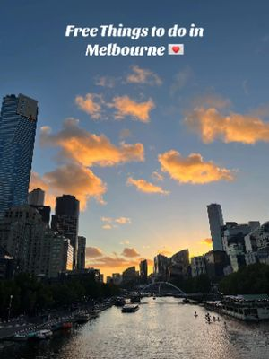
Free things to do
@chiarabgmn
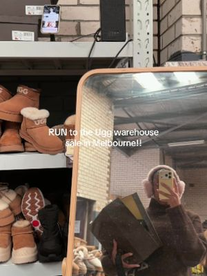
Best markets in Melbourne
@meetyouinmelbs
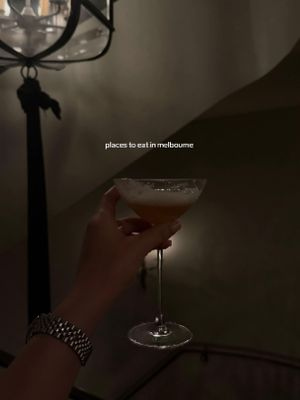
Places to eat
@food.album
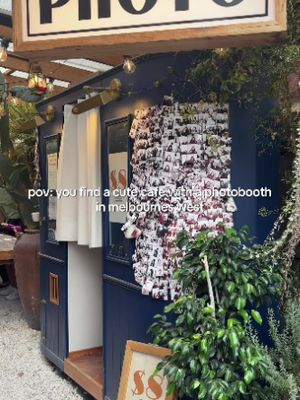
Melbourne's best photo booths
@rubsjean
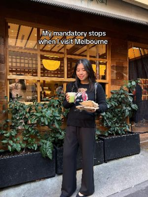
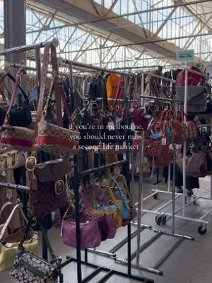
Shopping day in South Yarra
@lylayuv
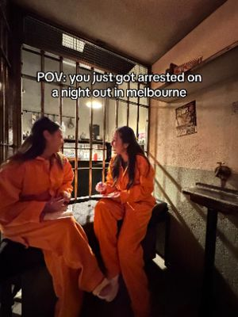
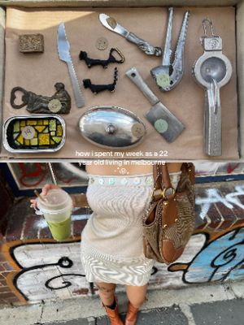
A week living in Melbourne
@lylayuv
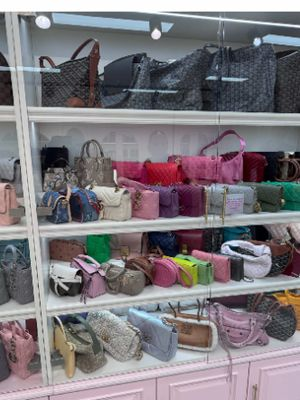
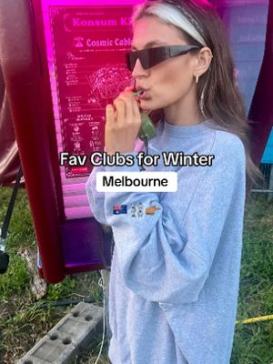
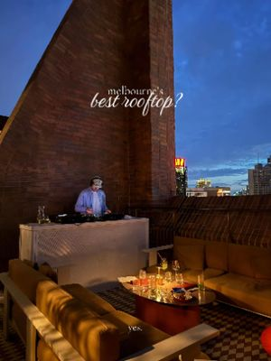
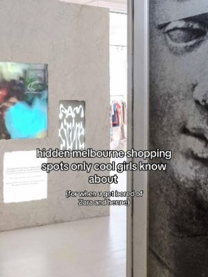
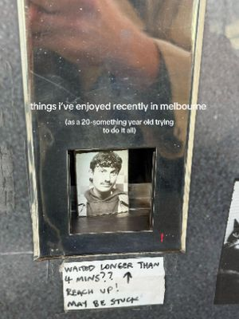
Solo things enjoyed recently
@johnanderso.n
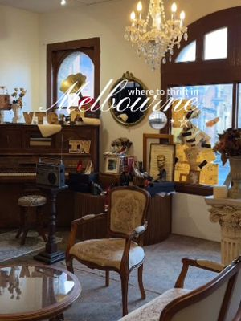
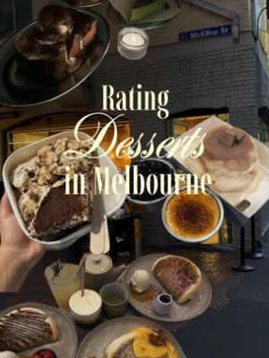
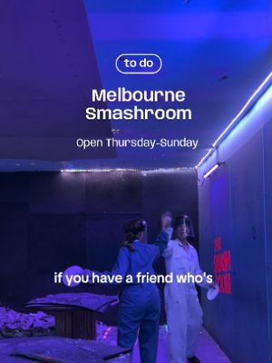
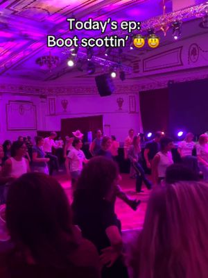
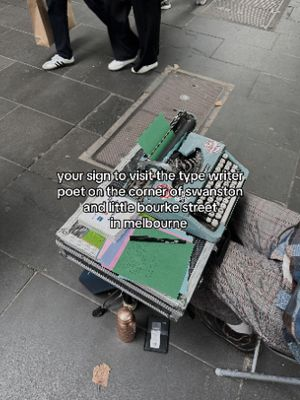
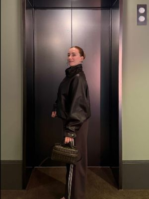
Elmo's burgers
@ellievdunne
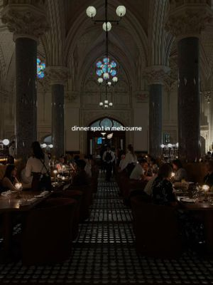
A dinner spot in Melbourne
@keirceir
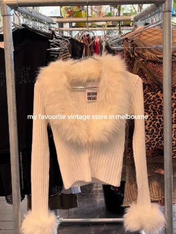
Gigs around Melbourne
@gracie.sann
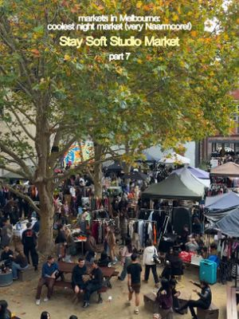
Restaurants to add to your list
@monica.olivetto
Just for laughs
@editexxpress
J. Cole tour merch
@modopeboy
Marion, South Yarra
@hungry2hippos
Story time
@shingybingyyy
The first Kmart homeware store
@thisisemmajanexo
Cookie Loaded
@cookieloaded
Rating viral hot chocolates
@eatswithclaire
Photo booth that allows retakes
@anandherproblems
Melbourne faves from 3 visits
@ellievdunne
Things to do, eat and shop
Sights, cafés, matcha, restaurants and shops near each base. Tap a photo or name to open it in Google Maps. Prices are rough guides.
Melbourne · From our TikTok chat
J. Cole at Rod Laver Arena
Booked
The Fall-Off Tour. Tickets are in the AXS app (show your AXS Mobile ID to scan in). Bags must be A4 or smaller; there is a cloakroom at Gate 4.
Butterfly House
Zoo entry
A warm glasshouse full of free-flying butterflies inside the zoo. Maya's pick.
Arima Spa
Check price
Japanese-style bathhouse and day spa in the CBD, perfect after the overnight flight.
Point Ormond Lookout
Free
One of Melbourne's best sunset spots, looking back at the skyline over the bay.
Melbourne · Cafés and sweets
Dukes Coffee Roasters
$
Small, busy specialty coffee on Flinders Lane. The old photo booth at Flinders Street is next door.
Melbourne · Eat and drink
Melbourne · Fashion and vintage
Kentez Studio
$$
Hidden studio under the Flinders Street interchange with shoes, jackets and bags no one else will have.
Tokyo · Sumo, cars, art and workshops
Live sumo show, Shinjuku
About A$86
Watch a live bout up close, learn the rituals and take a photo with the wrestlers. Walkable from Book & Bed.
Daikoku JDM car meet
About A$196
A night at Daikoku, Tokyo's famous car-meet car park, with tuned Skylines and GT-Rs. The ride-along drift days are A$500+.
Kintsugi workshop, Asakusa
About A$13
Repair ceramics with real lacquer and gold. One hour, and you take it home.
Glass etching, Azumabashi
About A$30
Etch your own design onto handmade Sumida glass, a short walk from Asakusa.
Mariko Mori at Mori Art Museum
About A$19
Her first big solo show in Japan in 24 years, from 90s photography to huge immersive installations.
Tower Records Shibuya
Free
Nine floors of music, from J-pop and K-pop to vinyl. The closest thing to a music gallery in Tokyo.
Purikura at moreru mignon
A few hundred yen
Japanese photo-sticker booths with retouching and props. The cheap version of a photoshoot. A private pro shoot in Asakusa starts around A$138.
Tokyo · Sights
Omoide Yokocho
Lantern-lit alleys of tiny yakitori stalls by Shinjuku Station.
Tsukiji Outer Market
Tamagoyaki, fresh sushi and grilled scallops from the stalls.


Tokyo · Cafés and matcha
Suzukien matcha gelato
About ¥500
Seven strengths of matcha gelato, up to one of the strongest in the world.
Glitch Coffee & Roasters
Light-roast specialty coffee, one of Tokyo's best-known cafés.


Tokyo · Eat


Tokyo · Shop
Shibuya PARCO
Nintendo Tokyo, the Pokémon Center and local designers in one mall.
Harajuku and Takeshita Street
Crêpes, candy floss and street fashion.
Shimokitazawa
Vintage shops, record stores and small cafés.
Ginza Six
Luxury mall with a free rooftop garden.
Don Quijote
Snacks, skincare and souvenirs. Bring your passport for tax-free.


Kinugawa and Nikko
Nikko Kanaya Hotel
Japan's oldest resort hotel. Try the lunch or the café's apple pie.


Kyoto · Sights
Ninenzaka and Sannenzaka
Stone lanes of old shops leading to Kiyomizu-dera.


Kyoto · Matcha and cafés


Kyoto · Eat and shop
Nishiki Market
Kyoto's kitchen: skewers, pickles and matcha sweets.
Teramachi and Shinkyogoku
Covered arcades with souvenirs and purikura photo booths.


Kanazawa day trip
Omicho Market
Seafood bowls. Winter is crab season.


Seoul · Hongdae and Yeonnam-dong
Hongdae streets and AK& Hongdae
Buskers, dance crews and shops around Hongik Univ. station.
Mangwon Market
Cheap street food: hotteok, tteokbokki, fried chicken.


Seoul · Jongno and Bukchon
Changdeokgung and the Secret Garden
About ₩8,000 with the garden
A guided walk through the royal back garden.
Ikseon-dong
Hanok alleys turned into cafés and bars.
Insadong
Tea houses, craft shops and street snacks.
Gwangjang Market
Bindaetteok, mayak gimbap and knife noodles.
Myeongdong
K-beauty shops by day, street food stalls at night.
Café Onion Anguk
About ₩7,000
A bakery in a traditional hanok courtyard. The pandoro is the one to get.
Ssamziegil
A spiral mall of small Korean design shops.
Olive Young Myeongdong
The big K-beauty store. Bring your passport for tax refunds.


Seoul · Gangnam, Seongsu and day trips
Lotte World and Seoul Sky
About ₩60,000 plus ₩29,000
Indoor theme park, ice rink and the tower observatory.
Seongsu-dong
Pop-up stores and concept cafés in old factories.
Point of View
A stationery and objects shop. Good for small gifts.
Haus Nowhere Dosan
Gentle Monster, Tamburins and Nudake art-store building.
Spa Lei
A women-only jjimjilbang for a Christmas Day soak.
Nami Island
Tree-lined island walks, about an hour away.


Budget
What's booked so far, in Australian dollars. Rates used: CNY 1 = A$0.217, JPY 1 = A$0.0097, USD 1 = A$1.54, KRW 1 = A$0.00106.
- FlightsA$1,755
- Stays~A$2,806
- TrainsA$325
- Booked so far~A$4,992
| Item | Local price | A$ |
|---|---|---|
| Melbourne to TokyoJetstar via Cairns, plus 16,645 Qantas points | — | 794.27 |
| Haneda to IncheonMM-809 | — | 204.78 |
| Incheon to PerthAirAsia via Kuala Lumpur | — | 755.83 |
| Apartment in Southbank5 nights, paid | — | 880.00 |
| Book & Bed Tokyo Shinjuku5 nights | CNY 1,806 | ~392 |
| Hana no Yado Matsuya3 nights | JPY 29,394 | ~289 |
| Continue Nijojo Kita5 nights | JPY 23,760 | ~230 |
| 9h nine hours Hamamatsucho1 night, Qantas hotel voucher | Voucher | 0 |
| Hanok Hotel DAAM6 nights | KRW 424,617 | ~450 |
| GOYOO INN & CABINS7 nights | KRW 533,452 | ~565 |
| Klook trainsKinu 110, Nozomi 255, Nozomi 70 | — | 325.10 |
| Klook eSIMsAsia 28 days + Indonesia 5 days | — | ~106 |
| Total | ~4,992 |
Not in this total: Perth to Melbourne (paid), the Spacia Kinugawa train on 6 Dec and the Kanazawa day-trip tickets. Agoda charges in local currency on the payment date, so the A$ amounts can move a little.
Getting around
The eSIM covers Japan and Korea, so maps work from the moment you land.
Suica
Add it to Apple Wallet before you fly and top up with your card. It works on every metro and local train in this plan.
Haneda at midnight
Trains stop around midnight, so take one that gets you in by about 11 pm. Terminal 3 stays open overnight.
Naver Map and T-money
Google Maps can't do walking directions in Korea, so use Naver. Buy a T-money card at an Incheon convenience store for the subway and buses. WOWPASS does the same and doubles as a payment card, but its transit and shopping balances top up separately. Also get Papago for translating and Kakao T for taxis.
Incheon, both ways
You land before the first AREX train, so wait in arrivals, then take the AREX to Seoul Station and the subway to Jongno. For the 7:35 am flight home, the first 6103 bus leaves COEX at 4:10 am and takes about 65 minutes.
Sending the suitcase ahead
Yamato can send your case from Book & Bed to the Kyoto hotel, so you only take a small bag to the ryokan. Ask at reception the day before.